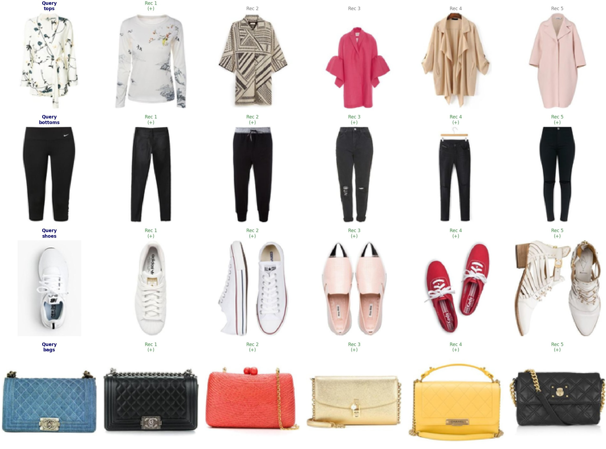
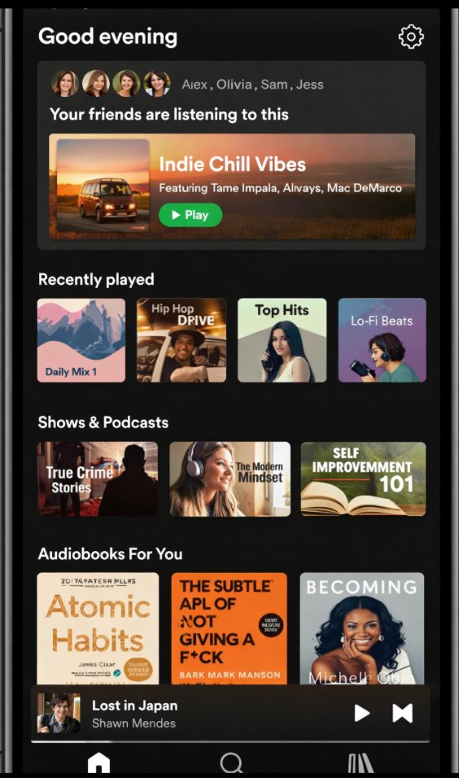

Built at the intersection of analytics, strategy, and design — spanning Python-based ML, causal inference, and spatial data visualisation.
"Can an algorithm dress you?"
A visual product affinity recommendation engine built on the Polyvore outfits dataset. EfficientNet-B0 extracts 1,280-dimensional CNN embeddings from fashion item images; KNN with cosine similarity retrieves the top-5 visually compatible items per query — outperforming a colour histogram baseline across all evaluation metrics. Built for the LBS Machine Learning course.

Green border (+) = same category as query · Grey = different category
The CNN model consistently outperforms the colour histogram baseline — confirming that high-level visual features learned from ImageNet (shape, texture, style) are more discriminative for outfit compatibility than raw colour distributions. Precision is flat across ranks 5–10, meaning the model retrieves its best matches in the first five results.
"Does social proof turn listeners into subscribers?"
Designed and analysed a randomised controlled experiment testing whether a "Your friends are listening to this" badge on Spotify's Home feed drives higher engagement and Premium conversion among free-tier UK users. 117,950 users, 50/50 RCT, two-sample t-tests, OLS with HC3 robust standard errors, and subgroup heterogeneity analysis — including a Simpson's Paradox check across friend-count segments.

"Your friends are listening to this"
A social proof badge surfaced on Spotify's Home feed — showing a user's friends listening to a playlist in real time. The experiment tested whether this nudge drives more listening time and, ultimately, Premium conversion among free-tier UK users.
Randomisation check confirmed balance across age (p=0.748) and mutual friends (p=0.55). The treatment coefficient of 5.31 min holds with and without controls — the badge is the driver, not confounding covariates.
74.5% of the lift is generated directly from on-card listening, with +1.35 min spillover to the broader app — suggesting a genuine expansion of total engagement, not just redistribution.
Relative lift by friend bucket — users with 51–200 mutual friends show a statistically significant additional response above baseline (p=0.012). This points to a clear roll-out strategy: start with high-connectivity users.
Scale progressively to the full UK free-tier base, starting with users with 51+ mutual friends. Keep minutes streamed as the lead metric for follow-up tests. Use dismissal rate and uninstall rate as rollout guardrails.
London's £630M Property Divide — location specificity over borough names.
Challenged the conventional assumption that London's property price variation is primarily a postcode-level phenomenon. Through granular spatial visualisations built in Tableau, the analysis reveals that price dispersion within individual postcodes can rival — and in some cases exceed — variation across postcode boundaries.
Interactive — use the tabs to navigate between views. Filter, hover, and explore postcodes directly.